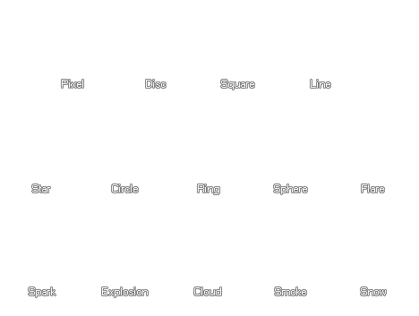

part_type_shape(ind, shape);
| Argument | Description |
|---|---|
| ind | The index of the particle type to set. |
| shape | The shape to choose. |
Returns: N/A
With this function you can set the sprite shape to use for the particle type, with the following constants being acceptable:
| Constant | Description |
|---|---|
| ind | The index of the particle type to set. |
| pt_shape_pixel | A 1x1 pixel. (This is the default setting.) |
| pt_shape_disk | A filled circle. |
| pt_shape_square | A filled square. |
| pt_shape_line | An 8px wide horizontal line. |
| pt_shape_star | A five-point filled star. |
| pt_shape_circle | A 3px outlined circle. |
| pt_shape_ring | A circle with an inward glow (looks like a bubble). |
| pt_shape_sphere | A circle with an outward glow ' solid in the middle, glowing outwards. |
| pt_shape_flare | A harshly glowing point (looks like an actual star in the night). |
| pt_shape_spark | A spark effect ' like a star with multiple points fading out. |
| pt_shape_explosion | A squarish cloud of smoke ' requires multiple colours to resemble an explosion. |
| pt_shape_cloud | A thin cloud, requires up scaling and multiple particles to resemble a cloud. |
| pt_shape_smoke | A smooth version of the explosion effect. Use multiple to create a smoke cloud. |
| pt_shape_snow | A generic snowflake shape. |

global.p1 = part_type_create();
part_type_shape(global.p1, pt_shape_square);
part_type_size(global.p1, 1, 3, 0, 0);
part_type_scale(global.p1, 1, 1);
part_type_colour1(global.p1, c_white);
part_type_alpha2(global.p1, 1, 0);
part_type_speed(global.p1, 2, 4, 0, 0);
part_type_direction(global.p1, 0, 180, 0, 0);
part_type_gravity(global.p1, 0.20, 270);
part_type_orientation(global.p1, 0, 0, 0, 0, 1);
part_type_blend(global.p1, 1);
part_type_life(global.p1, 15, 60);
The above code sets the particle type indexed in the global variable "p1" to the shape of a square, then sets various other particle properties.